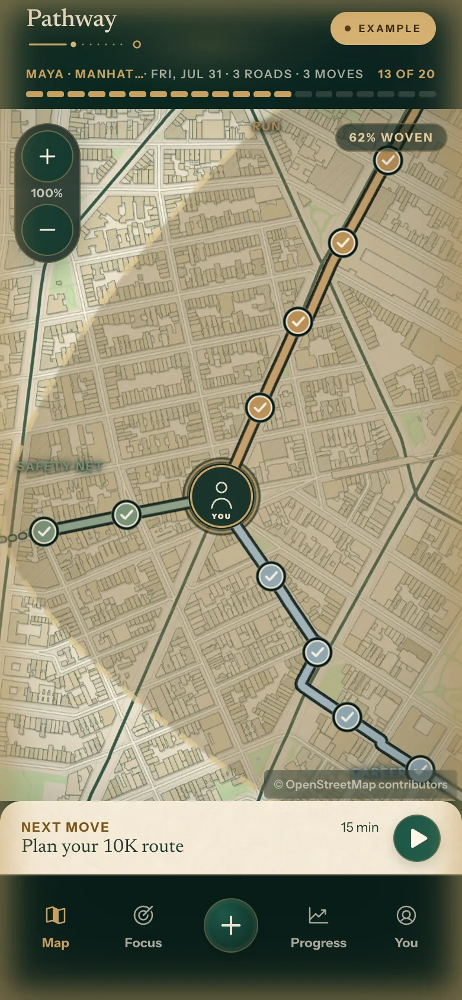
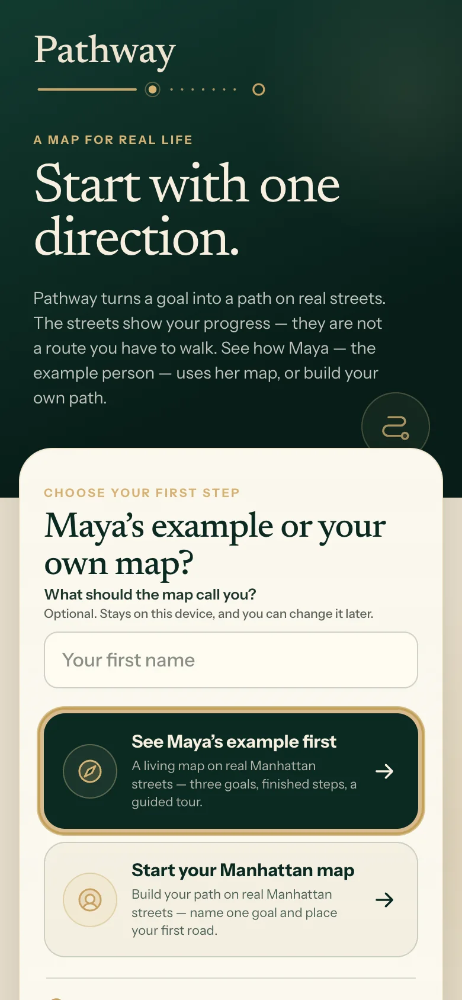
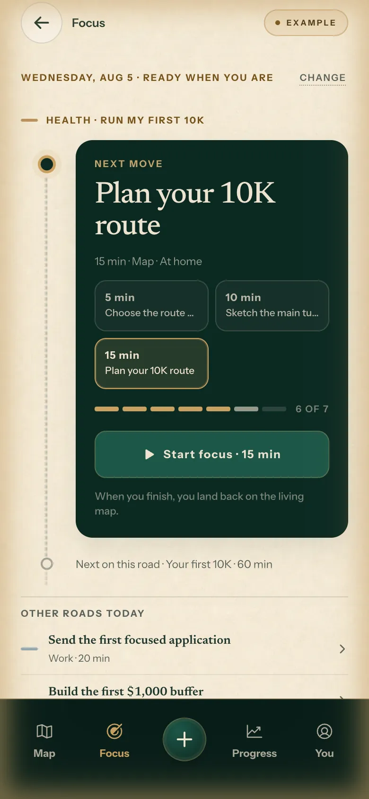
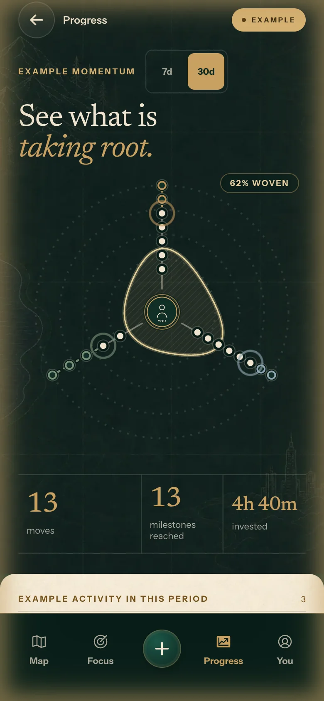
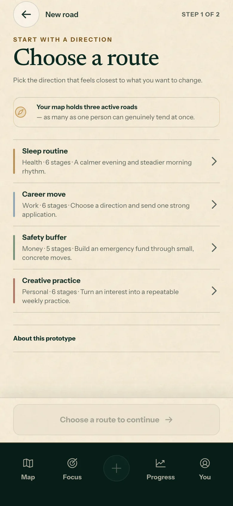
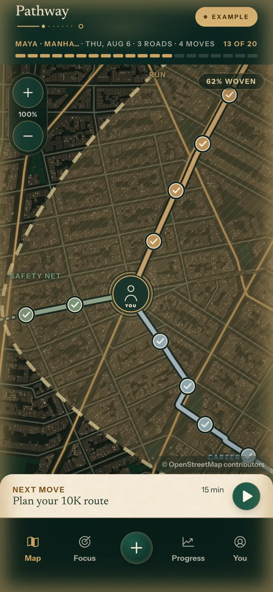

Twój cel staje się drogą na prawdziwych ulicach. Your goal becomes a road on real streets.
Pathway zamienia jeden cel w drogę na ulicach Manhattanu. Każdy wykonany ruch dokłada odcinek — mapa rośnie razem z Tobą. To nie trasa do przejścia, tylko żywy obraz Twojego postępu. Pathway turns one goal into a road on real Manhattan streets. Every move you finish adds a segment — the map grows with you. It is not a route to walk; it is a living picture of your progress.
Bez konta · bez instalacji · za darmo · aplikacja jest po angielsku No account · nothing to install · free · the app is in English

Prawdziwy ekran bety — mapa przykładowej Mai: 3 drogi, 13 z 20 kamieni, 62% utkane. Real beta screen — Maya's example map: 3 roads, 13 of 20 milestones, 62% woven.
Jak działaHow it works
Trzy kroki od celu do żywej mapy. Three steps from a goal to a living map.
Nazwij jeden celName one goal
Zdrowie, praca, pieniądze albo własny kierunek. Zaczynasz od jednej rzeczy, nie od dziesięciu.Health, work, money or your own direction. You start with one thing, not ten.
Pathway układa drogęPathway lays the road
Cel dostaje prawdziwą drogę na siatce ulic Manhattanu, z kamieniami milowymi po kolei. Możesz ją przeciągnąć po prawdziwych, istniejących ulicach i dopasować do siebie.Your goal gets a real road on the Manhattan street grid, with milestones in order. You can drag it along real, existing streets and shape it your way.
Ruch po ruchu tkasz mapęMove by move, you weave the map
Codziennie widzisz jeden następny ruch — 15–60 minut. Każdy ukończony dokłada odcinek drogi i podnosi procent „utkania" mapy.Each day you see one next move — 15–60 minutes. Every finished move adds a road segment and raises how much of your map is woven.
Prawdziwe ekrany betyReal beta screens
Żadnych makiet. Tak wygląda v75. No mockups. This is v75.





← przewiń →← swipe →
Rytm dniaDay cycle
Mapa żyje w rytmie Twojego dnia. The map lives in the rhythm of your day.
Poranek, dzień, wieczór i noc mają na mapie własne światło. To ten sam Manhattan — bez żadnego filtra, dokładnie tak to wygląda w aplikacji. Przekręć porę dnia sam: Morning, day, evening and night each light the map differently. It is the same Manhattan — no filter, exactly how the app looks. Turn the time of day yourself:
Przesuń suwak — zobacz, jak mapa gaśnie do nokturnu. Drag the slider — watch the map dim to a nocturne.
Beta
To jest beta. Mówimy wprost, co dostajesz. This is a beta. Here is exactly what you get.
Co działa już dziśWhat works today
- Pełna aplikacja w przeglądarce — telefon i komputer, bez konta.The full app in your browser — phone and desktop, no account.
- Przykład Mai z przewodnikiem oraz Twoja własna mapa na Manhattanie.Maya's guided example plus your own Manhattan map.
- Kształtowanie drogi palcem po prawdziwych ulicach Manhattanu.Shaping your road by touch along real Manhattan streets.
- Rytm dnia na mapie, ekrany Focus i Progress, eksport danych do pliku.The day cycle on the map, Focus and Progress screens, data export to a file.
- Instalacja na ekranie głównym i działanie offline.Home-screen install and offline use.
Nad czym myślimy dalejWhat we are thinking about next
- Najbliżej: kolejne miasta poza Manhattanem.Up next: more cities beyond Manhattan.
- Więcej szablonów celów i dróg.More goal and road templates.
- Jeszcze swobodniejsze kształtowanie trasy palcem.Shaping a road by touch, freer still.
- Kolejność wyznaczy Wasz feedback — dlatego ta strona istnieje.Your feedback sets the order — that is why this page exists.
Ankieta · 2 minutySurvey · 2 minutes
Najpierw wejdź do apki. Potem powiedz nam, jak było. Open the app first. Then tell us how it went.
Pytamy o to, co faktycznie zrobiłaś/zrobiłeś — nie o wrażenia z opisu. Dlatego najpierw otwórz betę i zrób jeden ruch, a dopiero potem wróć tutaj. Odpowiedzi nie idą na żaden serwer — składamy z nich gotową wiadomość, którą wysyłasz sama/sam. We ask what you actually did, not what you think of a description. So open the beta first, make one move, then come back. Nothing goes to a server — your answers are assembled into a ready message that you send yourself.
Pełna wersjaFull version
Zapisz się — damy Ci znać, gdy wyjdziemy z bety.Sign up — you will hear from us when we leave beta.
Jeden mail z zapisem wystarczy. Zero spamu: odezwiemy się przy starcie pełnej wersji i najwyżej przy dużych nowościach bety. One signup email is enough. Zero spam: we will write when the full version ships, and at most for major beta updates.
Wolisz zwykły mail? Prefer plain email?
fedorczak.michal@gmail.com
·
✓ skopiowano✓ copied
Na telefonieOn your phone
Najlepiej smakuje z ekranu głównego. Best from your Home Screen.
Pathway to aplikacja webowa (PWA): ten sam adres działa w przeglądarce i jako pełnoekranowa aplikacja offline. Instalacja zajmuje 20 sekund i nie przechodzi przez żaden sklep: Pathway is a web app (PWA): the same address works in the browser and as a full-screen offline app. Installing takes 20 seconds and skips the app stores entirely:
- Otwórz ten link w Safari (iPhone) lub Chrome (Android).Open this link in Safari (iPhone) or Chrome (Android).
- iPhone: Udostępnij → „Dodaj do ekranu początkowego". Android: menu → „Zainstaluj aplikację".iPhone: Share → "Add to Home Screen". Android: menu → "Install app".
- Otwieraj z ikony — pełny ekran, działa też bez internetu.Open from the icon — full screen, works offline too.
💡 Wskazówka: zainstaluj zanim zaczniesz własną mapę. Wersja zainstalowana i ta w przeglądarce trzymają dane osobno. 💡 Tip: install before you start your own map. The installed app and the browser tab keep separate data.
Czytasz na komputerze? Zeskanuj telefonem — trafisz prosto do bety.Reading on a computer? Scan with your phone to jump straight into the beta.
FAQ
Krótkie pytania, krótkie odpowiedzi.Short questions, short answers.
Ile to kosztuje?How much does it cost?
Beta jest w pełni darmowa i bez reklam. O modelu pełnej wersji zdecydujemy po becie — zapisani dowiedzą się pierwsi.The beta is completely free with no ads. Full-version pricing will be decided after the beta — the signup list hears first.
Po jakiemu jest aplikacja?What language is the app in?
Po angielsku. Język jest prosty i krótki — do przejścia bety wystarczy szkolny angielski. Innych wersji językowych na razie nie obiecujemy.English. The copy is short and simple. We are not promising other languages yet.
Co z moimi danymi?What about my data?
Wszystko zostaje na Twoim urządzeniu — nie ma kont, serwera z danymi ani śledzenia. W ustawieniach masz eksport do pliku. Ta strona też niczego nie zbiera. Podkłady mapowe: © autorzy OpenStreetMap.Everything stays on your device — no accounts, no data server, no tracking. Settings include a file export. This page collects nothing either. Base maps: © OpenStreetMap contributors.
Na czym to działa?What does it run on?
iPhone (Safari), Android (Chrome) i każda nowoczesna przeglądarka na komputerze. Na telefonie możesz dodać aplikację do ekranu głównego — działa wtedy offline.iPhone (Safari), Android (Chrome) and any modern desktop browser. On a phone you can add it to your Home Screen — it then works offline.
Dlaczego akurat Manhattan?Why Manhattan?
Beta skupia się na jednym mieście, żeby drogi były naprawdę dopracowane: prawdziwa siatka ulic, trasy prowadzone po istniejących ulicach, ręcznie kalibrowany teren. Kolejne miasta są pierwsze w kolejce po becie.The beta focuses on one city so the roads are genuinely polished: a real street graph, routes that follow the actual street grid, hand-calibrated terrain. More cities are first in line after the beta.
Czy mój postęp przepadnie po becie?Will my progress disappear after the beta?
Nie planujemy niczego kasować — Twoja mapa mieszka u Ciebie na urządzeniu, a eksport do pliku daje Ci własną kopię zapasową.We do not plan to delete anything — your map lives on your device, and the file export gives you your own backup.
Zacznij od jednego kierunku.Start with one direction.
Obejrzyj mapę Mai, zrób jeden ruch i zobacz, jak rośnie droga. Potem napisz nam, co myślisz — to dosłownie zmienia produkt.See Maya's map, make one move and watch the road grow. Then tell us what you think — it literally shapes the product.